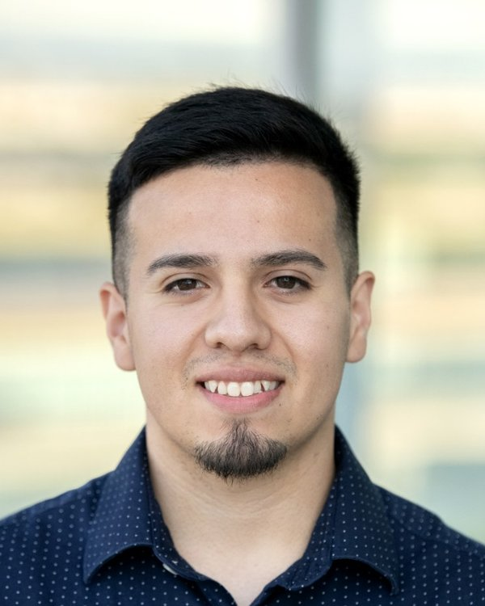

About

Hi, I'm Jesus Rodriguez.
A little bit about me is that I was born in Mexico and moved to the United States when I was just a few months old, learning English along the way like so many others. I grew up in Wenatchee, Washington, and from my teenage years on, I've believed in working hard for what I want.
That drive took me to Yakima Valley College and then Central Washington University, where I earned my bachelor's degree in computer science. Today I work full time as a software engineer.
I started J Rodriguez Web Studio to help small businesses create or improve their websites without the big price tag. I know what it takes to build something from the ground up, and I bring that same work ethic to every project.
Family is at the heart of everything I do. When I'm not building websites, I'm spending time with my wife and our two kids, who are my biggest motivation.